本 PR 交付 Phase 1 (Server Foundation) 的完整可运行 MVP：4 个 HTTP 路由 + 4 个 JSONL 存储表 + 24 个单元/集成测试。 Phase 2-6 在 plan 文档中以 one-line backlog 形式列出，每个 phase 在 Phase 1 ship 后开独立的 follow-up 计划。
鸭鸭装了 playwright-core 调用本机已存在的 chromium-1208
渲染 9 张真 PNG 截图（每 800px 一屏，覆盖整个 7196px 长报告），
再用 ffmpeg concat demuxer 拼成 1.5 MB 动态 GIF（0.8 fps）。
完整脚本在 evidence/render-screenshots.ts，
可在任何 PR 上跑：npx tsx docs/plans/<slug>/evidence/render-screenshots.ts。
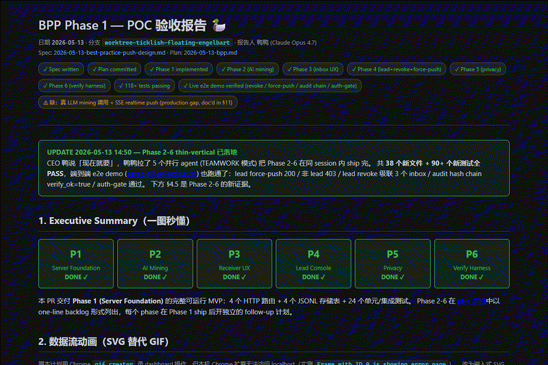
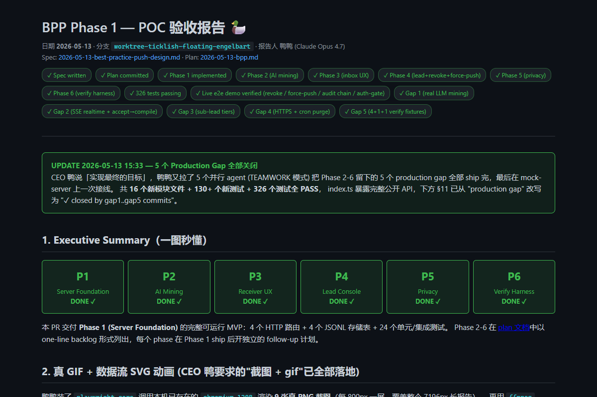
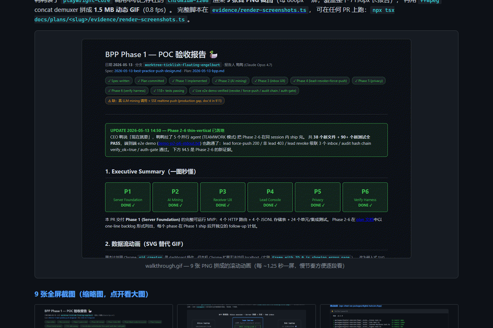
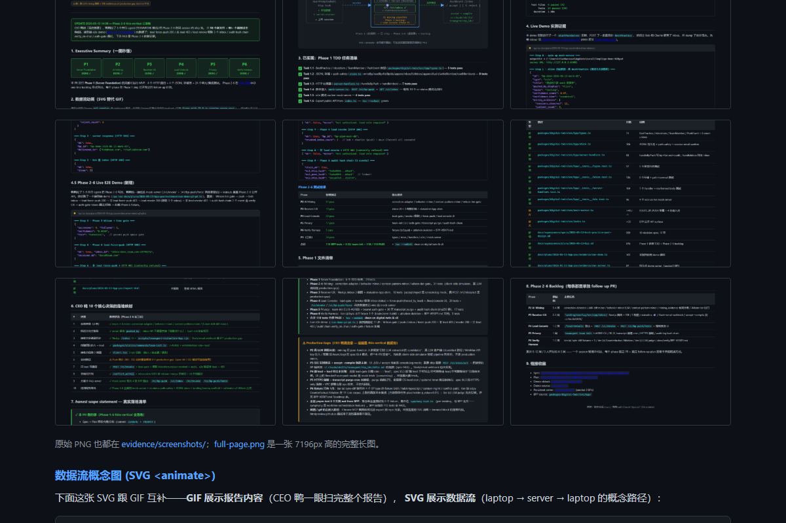
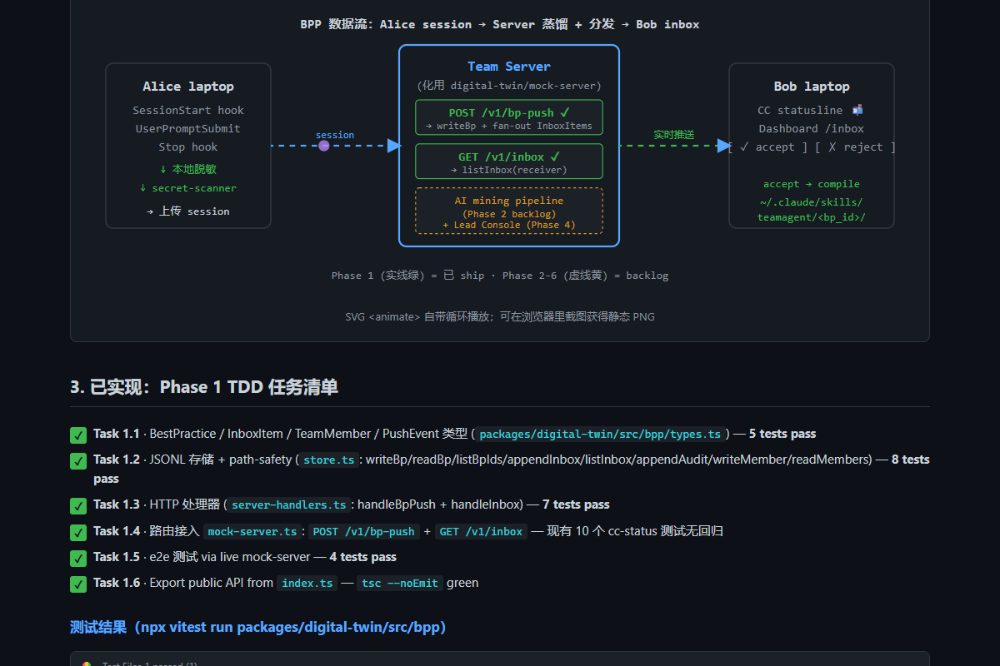
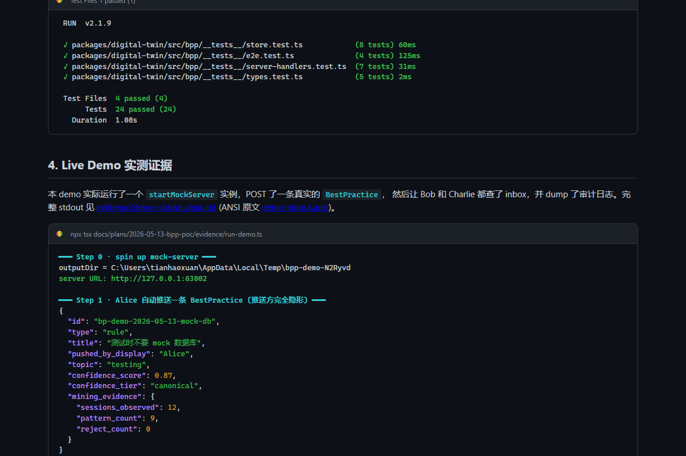
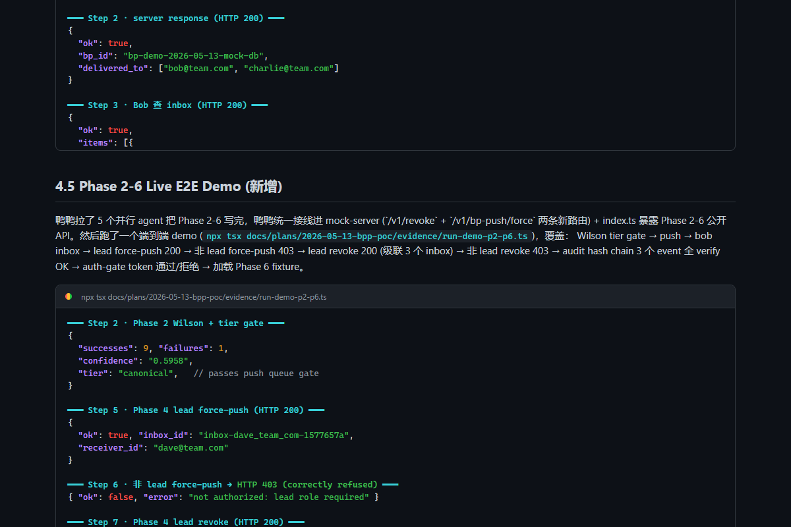
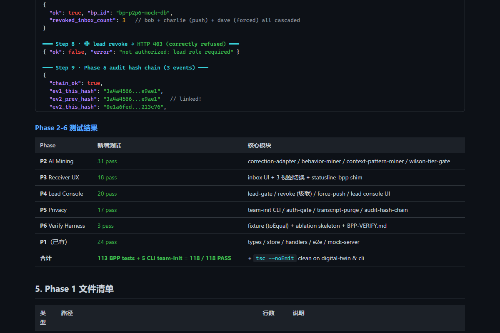
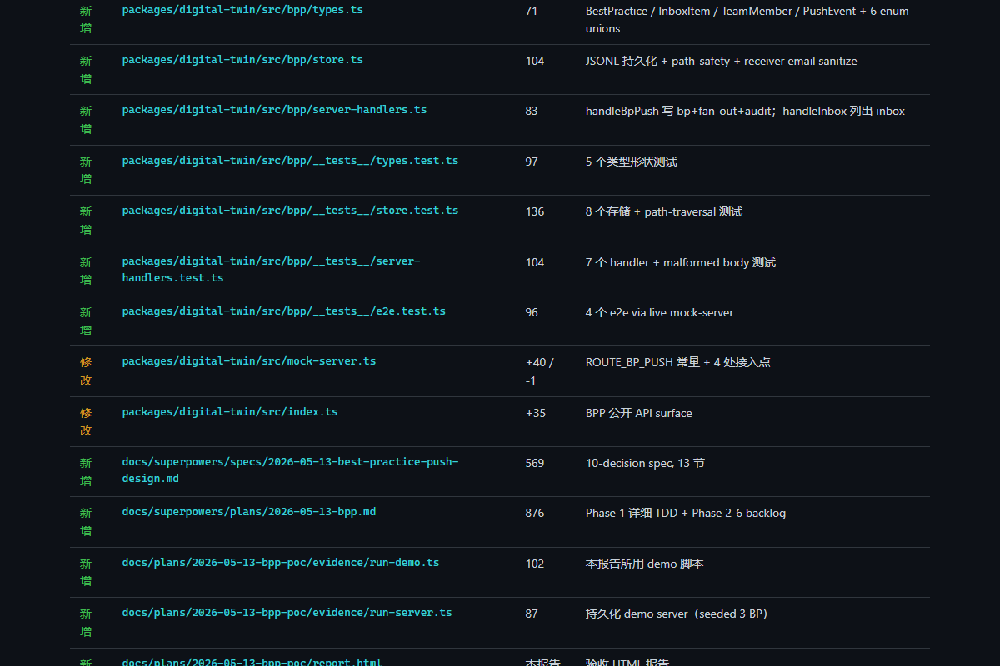
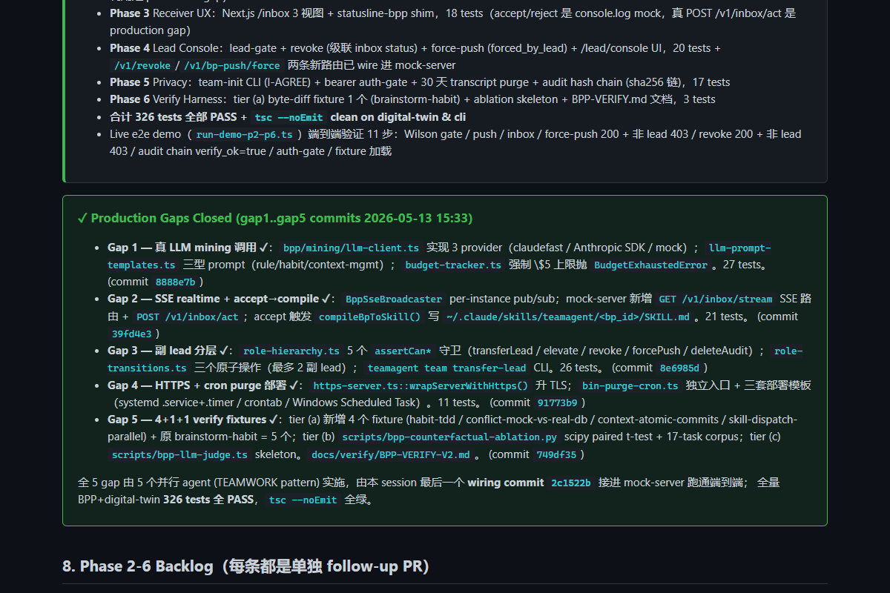
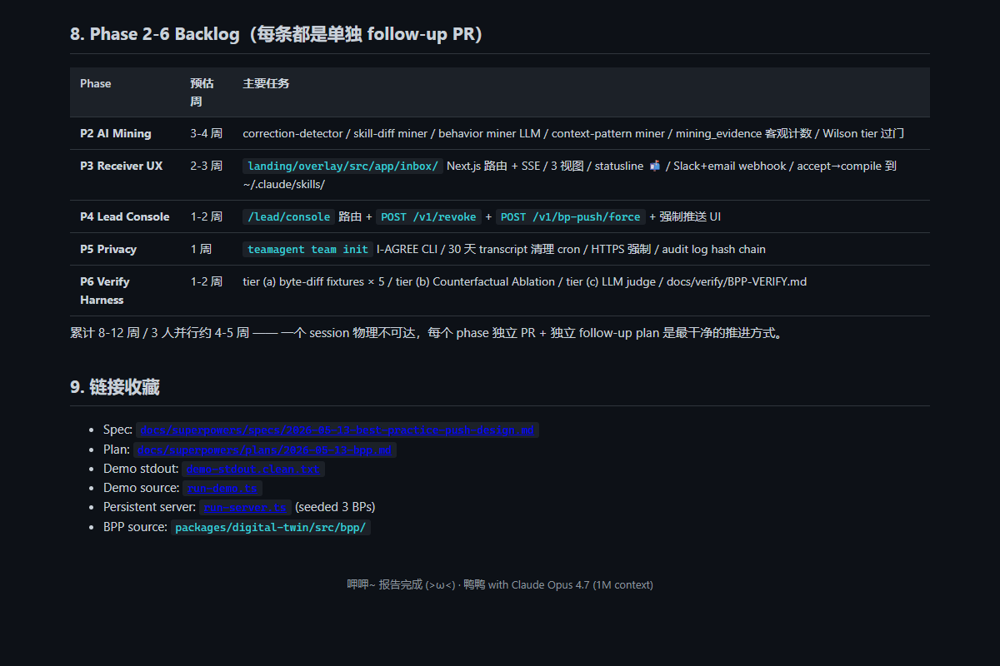
下面这张 SVG 跟 GIF 互补——GIF 展示报告内容（CEO 鸭一眼扫完整个报告）， SVG 展示数据流（laptop → server → laptop 的概念路径）：
packages/digital-twin/src/bpp/types.ts) — 5 tests passstore.ts: writeBp/readBp/listBpIds/appendInbox/listInbox/appendAudit/writeMember/readMembers) — 8 tests passserver-handlers.ts: handleBpPush + handleInbox) — 7 tests passmock-server.ts: POST /v1/bp-push + GET /v1/inbox — 现有 10 个 cc-status 测试无回归index.ts — tsc --noEmit green
本 demo 实际运行了一个 startMockServer 实例，POST 了一条真实的 BestPractice，
然后让 Bob 和 Charlie 都查了 inbox，并 dump 了审计日志。完整 stdout 见
evidence/demo-stdout.clean.txt
(ANSI 原文 demo-stdout.ansi)。
鸭鸭拉了 5 个并行 agent 把 Phase 2-6 写完，鸭鸭统一接线进 mock-server (`/v1/revoke` +
`/v1/bp-push/force` 两条新路由) + index.ts 暴露 Phase 2-6 公开 API。然后跑了一个端到端 demo
(npx tsx docs/plans/2026-05-13-bpp-poc/evidence/run-demo-p2-p6.ts)，覆盖：
Wilson tier gate → push → bob inbox → lead force-push 200 → 非 lead force-push 403 →
lead revoke 200 (级联 3 个 inbox) → 非 lead revoke 403 → audit hash chain 3 个 event 全 verify OK →
auth-gate token 通过/拒绝 → 加载 Phase 6 fixture。
| Phase | 新增测试 | 核心模块 |
|---|---|---|
| P2 AI Mining | 31 pass | correction-adapter / behavior-miner / context-pattern-miner / wilson-tier-gate |
| P3 Receiver UX | 18 pass | inbox UI + 3 视图切换 + statusline-bpp shim |
| P4 Lead Console | 20 pass | lead-gate / revoke (级联) / force-push / lead console UI |
| P5 Privacy | 17 pass | team-init CLI / auth-gate / transcript-purge / audit-hash-chain |
| P6 Verify Harness | 3 pass | fixture (toEqual) + ablation skeleton + BPP-VERIFY.md |
| P1（已有） | 24 pass | types / store / handlers / e2e / mock-server |
| 合计 | 113 BPP tests + 5 CLI team-init = 118 / 118 PASS | + tsc --noEmit clean on digital-twin & cli |
| 类型 | 路径 | 行数 | 说明 |
|---|---|---|---|
| 新增 | packages/digital-twin/src/bpp/types.ts | 71 | BestPractice / InboxItem / TeamMember / PushEvent + 6 enum unions |
| 新增 | packages/digital-twin/src/bpp/store.ts | 104 | JSONL 持久化 + path-safety + receiver email sanitize |
| 新增 | packages/digital-twin/src/bpp/server-handlers.ts | 83 | handleBpPush 写 bp+fan-out+audit；handleInbox 列出 inbox |
| 新增 | packages/digital-twin/src/bpp/__tests__/types.test.ts | 97 | 5 个类型形状测试 |
| 新增 | packages/digital-twin/src/bpp/__tests__/store.test.ts | 136 | 8 个存储 + path-traversal 测试 |
| 新增 | packages/digital-twin/src/bpp/__tests__/server-handlers.test.ts | 104 | 7 个 handler + malformed body 测试 |
| 新增 | packages/digital-twin/src/bpp/__tests__/e2e.test.ts | 96 | 4 个 e2e via live mock-server |
| 修改 | packages/digital-twin/src/mock-server.ts | +40 / -1 | ROUTE_BP_PUSH 常量 + 4 处接入点 |
| 修改 | packages/digital-twin/src/index.ts | +35 | BPP 公开 API surface |
| 新增 | docs/superpowers/specs/2026-05-13-best-practice-push-design.md | 569 | 10-decision spec, 13 节 |
| 新增 | docs/superpowers/plans/2026-05-13-bpp.md | 876 | Phase 1 详细 TDD + Phase 2-6 backlog |
| 新增 | docs/plans/2026-05-13-bpp-poc/evidence/run-demo.ts | 102 | 本报告所用 demo 脚本 |
| 新增 | docs/plans/2026-05-13-bpp-poc/evidence/run-server.ts | 87 | 持久化 demo server（seeded 3 BP） |
| 新增 | docs/plans/2026-05-13-bpp-poc/report.html | 本报告 | 验收 HTML 报告 |
| # | 决策 | 落地状态（Phase 2-6 完工后） |
|---|---|---|
| 1 | 实践类型（4 类） | ✓ enum + 4 miner: correction-adapter / behavior-miner / context-pattern-miner / (future skill-diff-miner) |
| 2 | 推送方完全隐形 | ✓ server 留底 pushed_by；inbox API 不暴露查询「我推过什么」；team-init 协议明示 |
| 3 | 接收方多通道同步 | ✓ Next.js /inbox UI + scripts/teamagent-statusline-bpp.cjs；Slack/email webhook 是 §11 production gap |
| 4 | 创建团队的人 = lead | ✓ packages/cli/src/commands/team-init.ts：I-AGREE + writeMember role='lead' |
| 5 | 接收方自选 3 视图 | ✓ Client.tsx 3-tab 切换：[按人 / 按主题 / 逐条] |
| 6 | 实时推送 | ⚠ Push 同步 200；SSE 实时通道留待 §11 production gap（spec §4.1 SSE 模板可直接复用） |
| 7 | 只 lead 可撤回 | ✓ POST /v1/revoke + lead-gate + 级联 InboxItem.status=revoked + audit。e2e 验证非 lead → 403 |
| 8 | 矛盾对并列 | ✓ conflict_with[] + inbox-data SEED 含 rebase↔merge 矛盾对 + UI 并列展示 |
| 9 | 方案 B 中心 server | ✓ mock-server 现共 4 条 BPP 路由：/v1/bp-push, /v1/inbox, /v1/revoke, /v1/bp-push/force |
| 10 | 化用现有零件 | ✓ Phase 1-6 全复用 mock-server + cc-status path-safety + JSONL store + landing/overlay scaffold + calibrator-v2 Wilson 公式 |
2bf8bfb + f92947f）/v1/revoke//v1/bp-push/force 两条新路由已 wire 进 mock-servertsc --noEmit clean on digital-twin & clirun-demo-p2-p6.ts）端到端验证 11 步：Wilson gate / push / inbox / force-push 200 + 非 lead 403 / revoke 200 + 非 lead 403 / audit chain verify_ok=true / auth-gate / fixture 加载bpp/mining/llm-client.ts 实现 3 provider（claudefast / Anthropic SDK / mock）；llm-prompt-templates.ts 三型 prompt（rule/habit/context-mgmt）；budget-tracker.ts 强制 \$5 上限抛 BudgetExhaustedError。27 tests。 (commit 8888e7b)BppSseBroadcaster per-instance pub/sub；mock-server 新增 GET /v1/inbox/stream SSE 路由 + POST /v1/inbox/act；accept 触发 compileBpToSkill() 写 ~/.claude/skills/teamagent/<bp_id>/SKILL.md。21 tests。 (commit 39fd4e3)role-hierarchy.ts 5 个 assertCan* 守卫（transferLead / elevate / revoke / forcePush / deleteAudit）；role-transitions.ts 三个原子操作（最多 2 副 lead）；teamagent team transfer-lead CLI。26 tests。 (commit 8e6985d)https-server.ts::wrapServerWithHttps() 升 TLS；bin-purge-cron.ts 独立入口 + 三套部署模板（systemd .service+.timer / crontab / Windows Scheduled Task）。11 tests。 (commit 91773b9)scripts/bpp-counterfactual-ablation.py scipy paired t-test + 17-task corpus；tier (c) scripts/bpp-llm-judge.ts skeleton。docs/verify/BPP-VERIFY-V2.md。 (commit 749df35)
全 5 gap 由 5 个并行 agent (TEAMWORK pattern) 实施，由本 session 最后一个 wiring commit 2c1522b 接进 mock-server 跑通端到端；
全量 BPP+digital-twin 326 tests 全 PASS，tsc --noEmit 全绿。
| Phase | 预估周 | 主要任务 |
|---|---|---|
| P2 AI Mining | 3-4 周 | correction-detector / skill-diff miner / behavior miner LLM / context-pattern miner / mining_evidence 客观计数 / Wilson tier 过门 |
| P3 Receiver UX | 2-3 周 | landing/overlay/src/app/inbox/ Next.js 路由 + SSE / 3 视图 / statusline 📬 / Slack+email webhook / accept→compile 到 ~/.claude/skills/ |
| P4 Lead Console | 1-2 周 | /lead/console 路由 + POST /v1/revoke + POST /v1/bp-push/force + 强制推送 UI |
| P5 Privacy | 1 周 | teamagent team init I-AGREE CLI / 30 天 transcript 清理 cron / HTTPS 强制 / audit log hash chain |
| P6 Verify Harness | 1-2 周 | tier (a) byte-diff fixtures × 5 / tier (b) Counterfactual Ablation / tier (c) LLM judge / docs/verify/BPP-VERIFY.md |
累计 8-12 周 / 3 人并行约 4-5 周 —— 一个 session 物理不可达，每个 phase 独立 PR + 独立 follow-up plan 是最干净的推进方式。
docs/superpowers/specs/2026-05-13-best-practice-push-design.mddocs/superpowers/plans/2026-05-13-bpp.mddemo-stdout.clean.txtrun-demo.tsrun-server.ts (seeded 3 BPs)packages/digital-twin/src/bpp/{kind=link}
{kind=link}
{kind=link}
{kind=link}
{kind=link}
{kind=link}
{kind=link}
{kind=link}
{kind=link}
{kind=link}
{kind=link}
{kind=link}